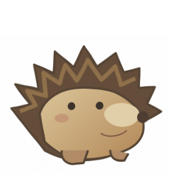
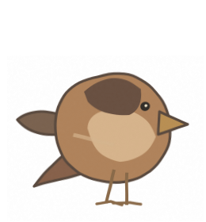

Leśna
Przygoda
Witaj w bajce o liczbach. Wraz z Tulisiem i leśnymi przyjaciółmi poznasz tabliczkę mnożenia — krok po kroku, bez pośpiechu.
Cała tabliczka mnożenia
zawsze pod ręką
Od pierwszych działań 1–10 aż do wszystkich wyników 100 × 100. Odkrywaj odpowiedzi, zakrywaj je i ćwicz pamięć.
Otwórz tabliczkę mnożenia →
Twoja przygoda
Twój plecak
Postępy zapisują się na tym urządzeniu. Możesz je przenieść na inny komputer lub telefon.
Poznaj leśnych przyjaciół
Pięć autorskich postaci, malowanych tak, jakby wyszły z dawnej książeczki.

Jeżyk KropekOpiekun gwiazdekSówka MądralkaPodpowiada i wspiera
Wróbelek ĆwiruśOdkrywca nowych krainSto kroków przez zaczarowany las
Otwieraj kolejne etapy. Najpierw nauczymy się małej tabliczki, a później wyruszymy znacznie dalej.
Policz i wpisz wynik
2 × 3 = ?
Możesz liczyć na palcach, kartce albo w pamięci.
Wspaniała wyprawa!
Nauka, którą można obserwować
Bez kont i bez bazy danych. Wyniki pozostają na urządzeniu dziecka — można pobrać raport, aby przekazać go wychowawcy.
Podsumowanie
Najczęściej mylone działania
Zapis i raport
Możesz pobrać plik postępów, aby wczytać grę na innym urządzeniu. Raport CSV można otworzyć w arkuszu kalkulacyjnym.
Wspólna lekcja na tablicy
Wybierz tabliczkę i uruchom osiem działań do wspólnego rozwiązania z klasą. Ten tryb nie zmienia indywidualnych postępów ucznia.
✿ Zobacz pełną tabliczkę mnożenia — można ją także wydrukować